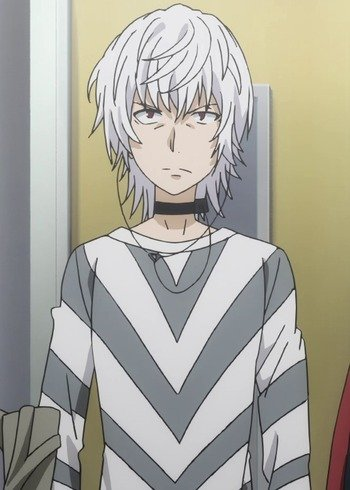

Toaru Majutsu no Index (A Certan Magical Index) is the anime adaption of a series of light novels created in the year 2004 by Kazuma Kamachi, illustrated by Kiyotaka Haimura, and published by ASCII Media Works. The anime produced by J.C. Staff aired in Japan from October of 2008 to March of 2009 and used the first six light novels as the source material. It was later licensed by Funimation for release in North America and has since produced a second and third season, Toaru Majutsu no Index II and Toaru Majutsu no Index III, as well as an animated movie, Toaru Majutsu no Index: Endymion no Kiseki.
Academy City, Japan, is at the forefront of science. Besides being 30 years ahead of the world technologically, more than three-fourths of this peculiar city's population consists of students developing their psychic abilities as espers in various institutions. Among these students is Touma Kamijou, a high school boy with the lowest psychic rank of zero, but with a mysterious power no scientist can understand: "Imagine Breaker," which allows him to negate other supernatural abilities.
This, however, doesn't affect Kamijou's life in the least as he plays his role as a regular teenager; that is, until he meets the strange Index Librorum Prohibitorum, a young girl who has memorized the entirety of the forbidden grimoires, and now a dangerous organization is hunting Index down. With several magicians looking to harm the girl, Kamijou will defend his new companion at all costs as he discovers a strange new realm of the supernatural.
"In Short" this whole story is about Science vs Religion.
| Picture | Character Name | Voice actors |
|---|---|---|
Kamijou, Touma |
Abe, Atsushi [Japanese]Solusod, Micah [English] |
|
 |
Index Librorum Prohibitorum |
Iguchi, Yuka [Japanese]Rial, Monica [English] |
 |
Mikasa, Mikoto |
Satou, Rina [Japanese]Karbowski, Brittney [English] |
|  | Accelerator |
Okamoto, Nobuhiko [Japanese]Tindle, Austin [English] |
Shirai, Kuroko |
Arai, Satomi [Japanese]Viktorin, Alison [English] |
|
 |
Last Order |
Hidaka, Rina [Japanese]Karbowski, Brittney [English] |
 |
MIKASA 10032 |
Sasaki, Nozomi [Japanese]Karbowski, Brittney [English] |
 |
Kanzaki, Kaori |
Itou, Shizuka [Japanese]Garrett, Morgan [English] |
 |
Tsuchimikado Motoharu |
Katsu, Anri [Japanese]Pittman, Newton [English] |
 |
Magnus Stiyl |
Taniyama, Kishou [Japanese]McCollum, Robert [English] |
 |
Tsukuyomi, Komoe |
Koyama, Kimiko [Japanese]Saxton, Jad [English] |